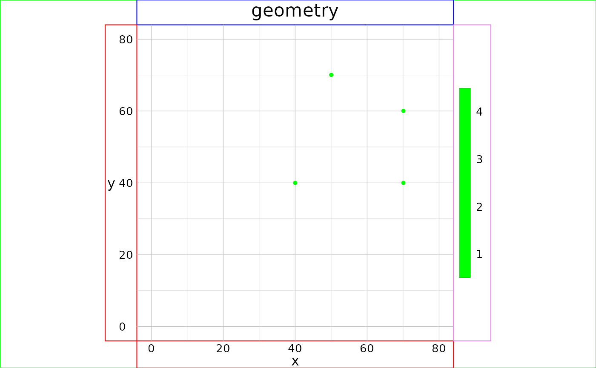

Create a point geometry
gs_point(anchor = NULL, window = NULL, template = NULL, vertices = NULL, ...)
| anchor | [ |
|---|---|
| window | [ |
| template | [ |
| vertices | [ |
| ... | [various] |
An invisible geom.
Other shapes: gs_polygon,
gs_random
library(magrittr)#> #>#> #> #># create points programmatically somePoints <- data.frame(X = c(5190599, 5222810, 5041066, 5234735, 5326537, 5027609, 5281527, 5189955), Y = c(3977612, 4060164, 3997230, 4117856, 4028167, 3971119, 4118207, 4062838)) (pointsGeom <- gs_point(anchor = somePoints)) %>% visualise(geom = ., linecol = "darkorange")# NOT RUN { input <- gtRasters$continuous # create points interactively myPoints <- gs_point(template = input, vertices = 5, col = "deeppink") %>% gt_group(, index = rep(1, 5)) anExtent <- gs_rectangle(myPoints) visualise(geom = anExtent, linecol = "green", new = FALSE) # }